Project Goal Ideation
We started the project with the goal to create engineering science kits for kids in the Seattle Children's Hospital. We spent the first couple weeks developing the project goal(s) by doing market research and ideating.
We did market research and a feasibility analysis to get project ideas and develope our final project goal. We focused on viability for user context and viability for club members to aquire materials and manufacture the kit.
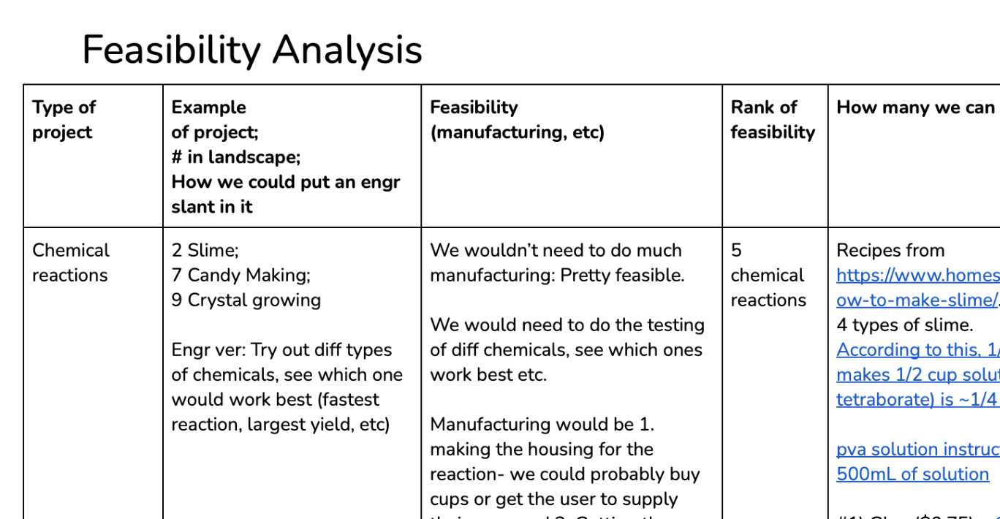
Final Project Goal: Designing and Delivering Mini Wind Turbine Science Kits to a school.
We settled on this final goal because an electrical engineering-type project would be less messy and give a quicker result than other types (for instance, a chemical engineering would require mixing substances together and waiting for a reaction). We decided on the user environment (a school verses a hospital) as the user would have more space to put the project together, would experience teamwork, and would be able to easily access an instructor for help.
User Needs
In developing the kit design, we considered 3 stakeholders: the students, instructors, and the funder, the campus sustainability group.
We conferred with our partner, a class coordinator from the Renton School District, for their user needs.
Finally, we created a survey to screen for user needs we may have missed.
Students
- -Project should be simple enough to put together for middle-school students.
- -Educational prompts should be succinct and comprehendible for a middle school level.
- -Students should not need to use tools that could be dangerous for them (saws, other power tools, machine shop machines, etc).
Instructors
- -Project should require minimal troubleshooting for instructor.
- -Kit teacher's guide should have a minimal page count.
- -Educational prompts should be included to reduce preparation time for instructors.
Sustainability
- -Use of sustainable materials such as wood or paper instead of plastic.
- -Inclusion of non-consumable items so the kit can be reused for future classes.
Future Needs
Students will complete surveys before and after building the kits to gauge their learning success, enjoyability, and any additional pain points.
Design Process Snapshots
Designing the Kits
Snapshots of the wind turbine base design progression:
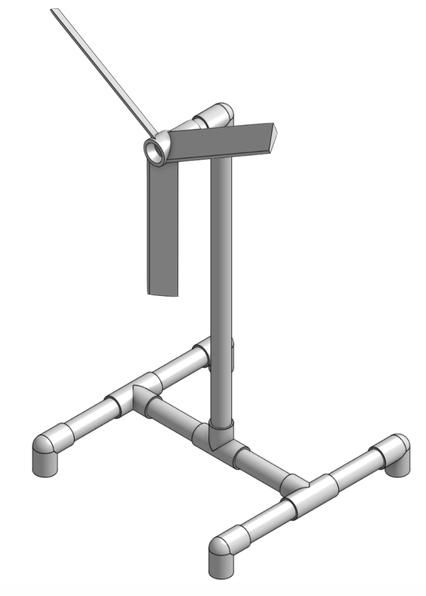→
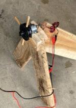→
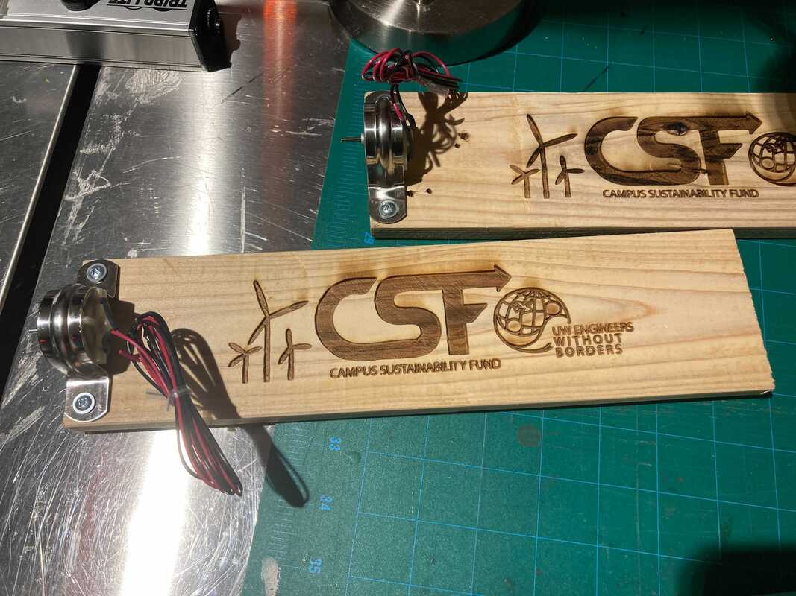
We started with a pvc plastic design, then switched to recycled wood for sustainability. Our final design was chosen by our partner school district's course coordinator due to ease of storage.
The final design

This box contains 10 mini-wind turbine kits. In total we delivered 4 boxes, or 40 kits to the Renton School District, serving 4 schools in total.
Designing the Teacher's Guide
This teacher's guide was a set of instructions showing instructors how to use the kit.
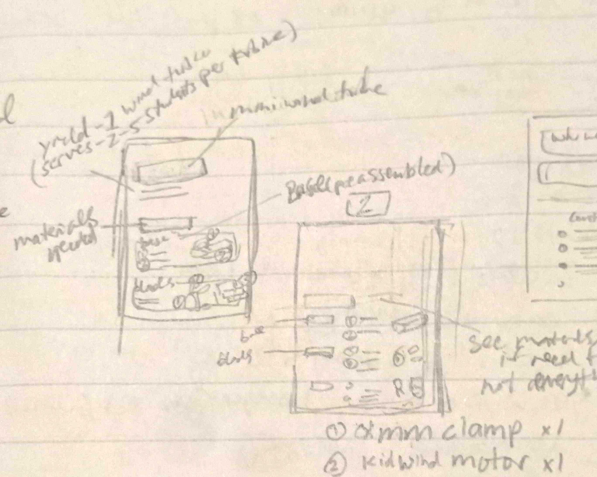→

I started by wireframing on paper, then iterated and finalized the design on Figma.
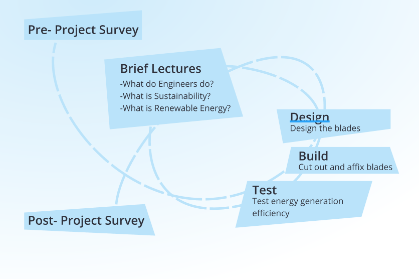→
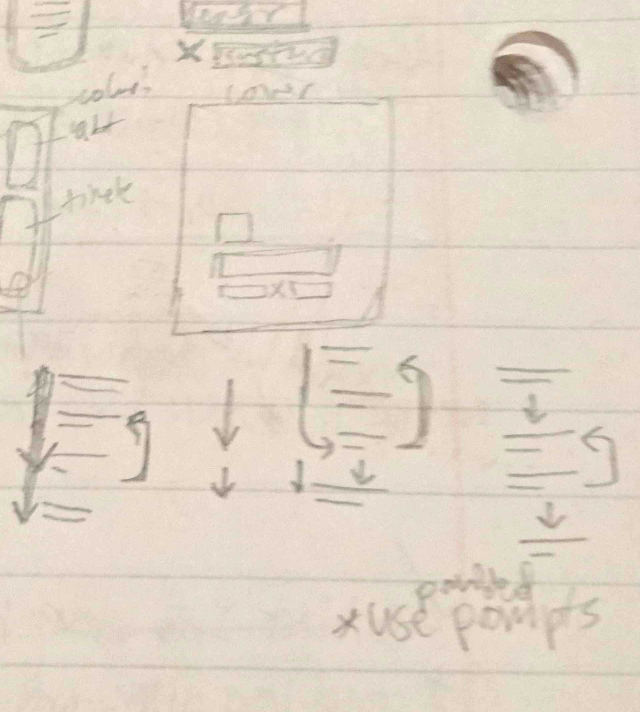→

One part of the design that involved some problem-solving is how to present the suggested progression through the kit. The cylical progression as well as the lack of space on the page presented a challenge. I started with a wide, circular design with many details (as seen on the left), and decided on a simple, rectangular design.
 →
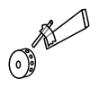
→
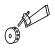
I also created some vector images for the manual.
Final Design
Here is the final design. The school will start using the kits and this manual near the tail end of the 2021-22 school year.
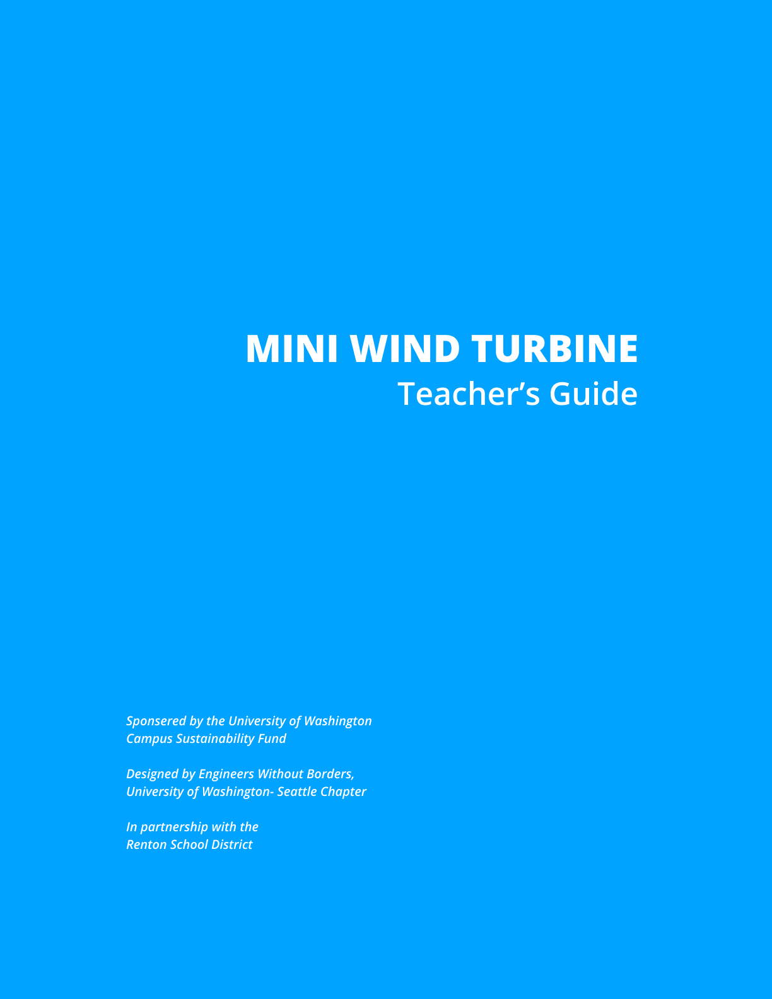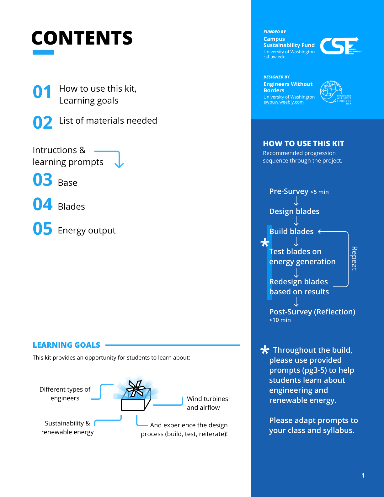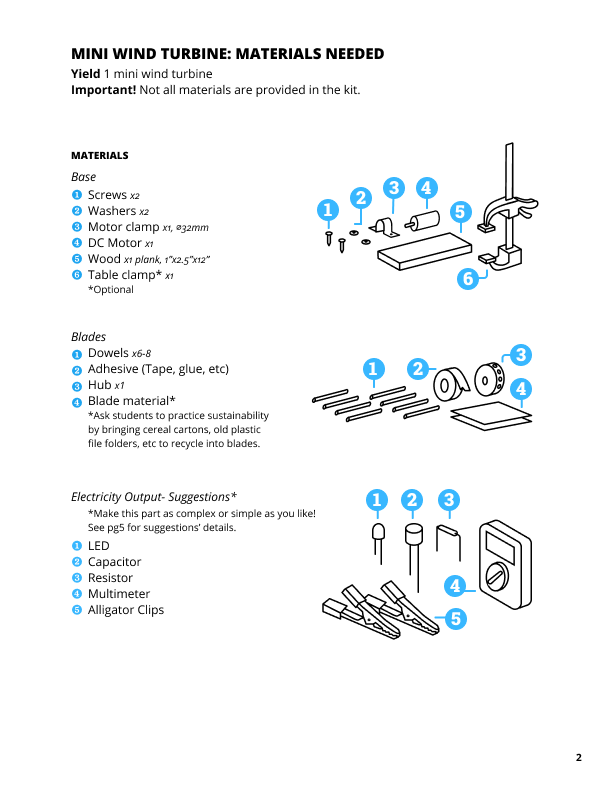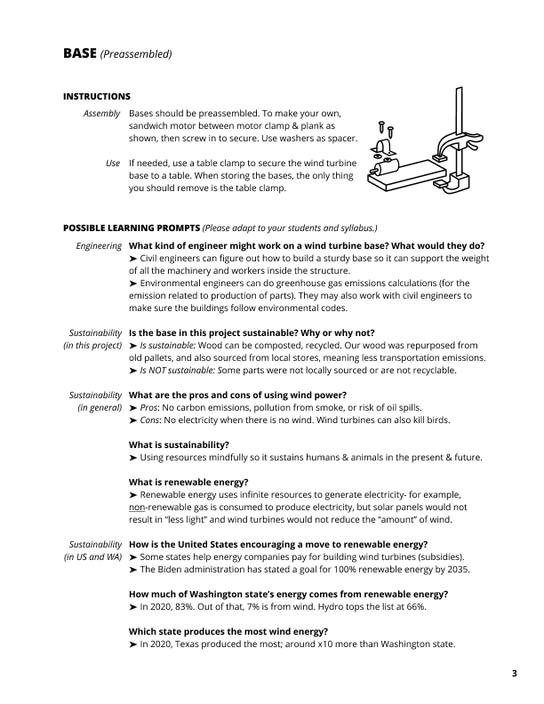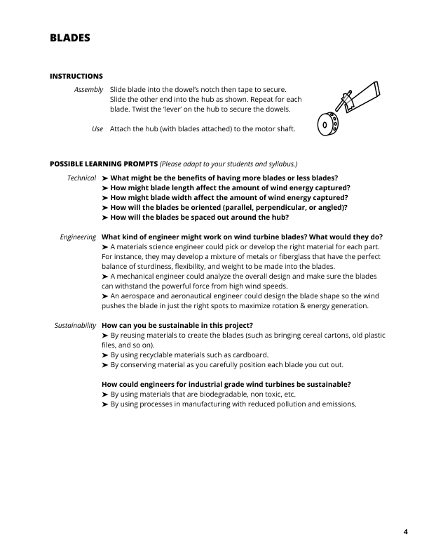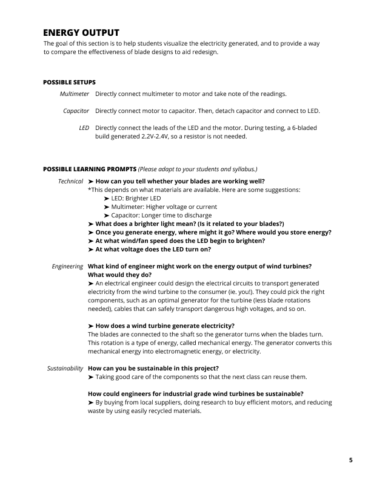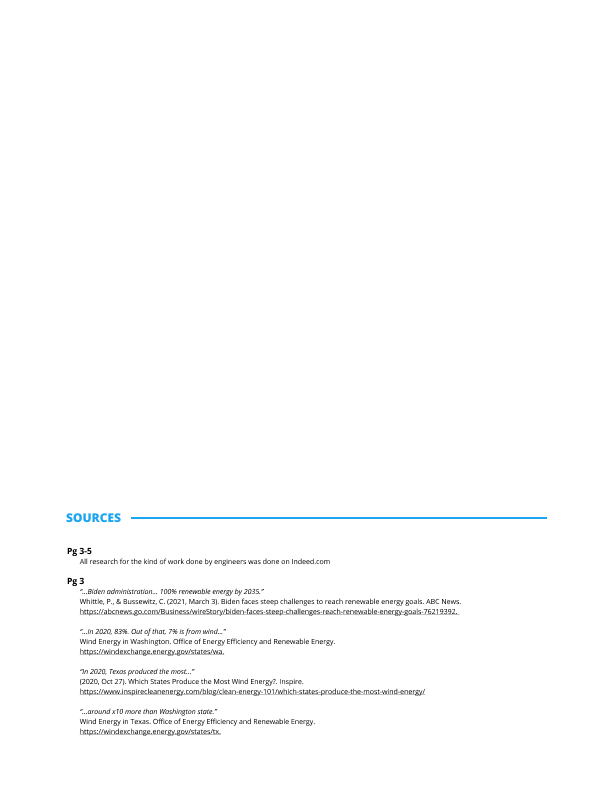
Reflection
One important thing I learned from doing this project is about project goals.
Be very clear when communicating about project goals!
At first, we planned for the educational component on majors and sustainability to be conveyed through a powerpoint presentation. When our partner first mentioned that their classes would rarely have lectures, and would only short ones when they did, we thought they were asked for a short & condensed powerpoint. However, they actually wanted no presentation at all and we pivoted to educational prompts instead where we wrote a set of discussion questions & answers for the instructors.